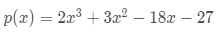
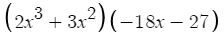
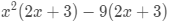
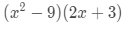
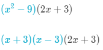
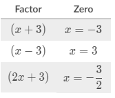

Finding Zeros
In order to find the zeros of an equation:
- Set the equation equal to 0
- Factor if possible, or use the quadratic formula
- Plug in x and find the value of x that makes the equation equal to 0
Let's look at an example:
In this case, you would factor by grouping, where you put parentheses around the first two terms and the last two terms:
Then you would factor out an x2 on the left and a -9 on the right:
Notice how the experssions in the parentheses are the same? That means we can distribute that expression out because the x2 and -9 are being multiplied by that expression:
The second expression is fine now. Notice how the first expression is a difference of squares (If you need help with that, look back at your polynomial identities)? That means we can factor that out even more:
Now we can set each of these expressions to 0 to find the zeros of the original equation:
Graphing the Equation
Now that you have the zeros, you need to know how the graph will look like.
Since the leading coefficient of the original equation is 2x3, the endpoints will look like y=x.
Using that information, you can start filling in the graph:
Hopefully this helps for now, because there's a lot more to this.